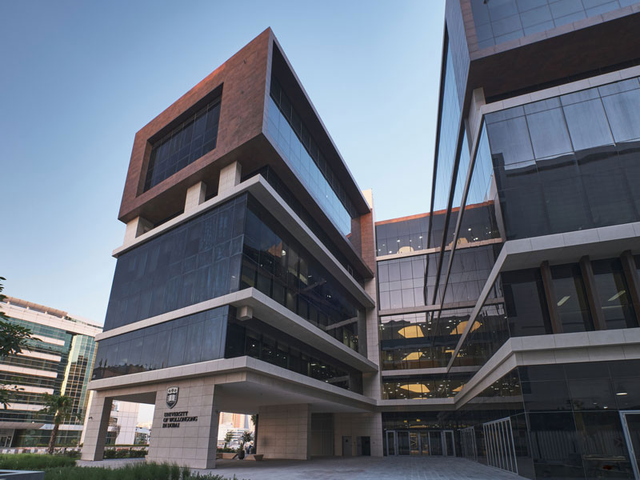
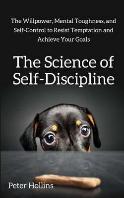
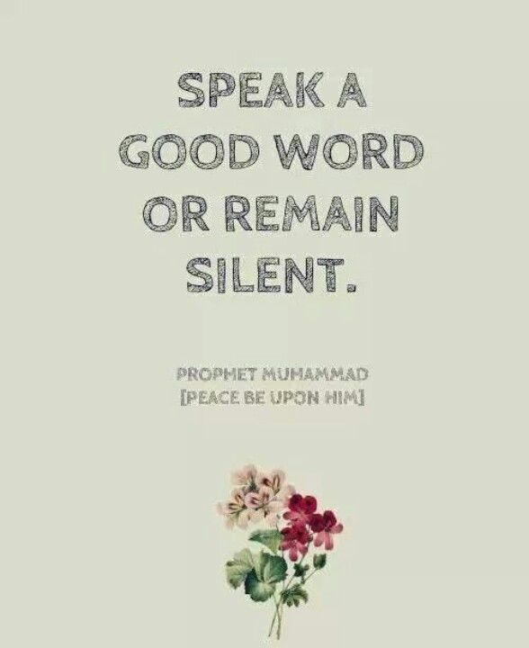

My journey for software development started as a young boy. I had loved using computers and playing games ever since I was small and I did not realize then that it would become my career one day. My decision to first enroll in Computer Science wasn't in University of Wollongong in Dubai, but it was in America. Where after trying to become a Pilot, I found out I was weak at Physics. My brother suggested me to try Computer Science so I did. I am happy that I chose Computer Science. I may not be the best nor the brightest but I will become become better with the help of the professors and tutors here at University of Wollongong in Dubai. Trying to be become better than ever! At the moment I am in my 2nd or 3rd year? You lose count when you are drowned in work.
I like reading books. There are a few I enjoy reading like "The Science of Self Discipline by". A remarkable book which thought me a lot about human psychology and how to get out of the comfort zone and try being uncomfortable all the time (You can blame this book if you find me questioning all the time) and one currently I am reading is about Artificial Intelligence. I thought I had an idea about AI prior to reading the book but the book humbled me and reminded that I am far from knowing anything. You think you know something but you actually don't know it. You know what I am saying? Nobody knows everything about anything. Life is a series of constant learning and progress and technology is changing at an exponential rate. 
My inspirations in life are many but the main person I would say my role model is the Prophet Muhammad (Peace be upon him) . It's in the human nature that when we look up to someone, we try to copy them. We start talking like them, acting like them, walking like them and much more. I am not even close to being like the Prophet himself but I try my best to live on his teaching. (Fun fact: The Prophet Muhammad (Peace be upon him) was ranked #1 as the most influential person in history by Michael H. Hart). There are other people as well whom I look upto like Adnan Rashid a historian from the UK who got me into reading books again and learning from History. There are many YouTube channels whom I accredit my desire to learn. As well as my parents, Traversy Media, UOWD professors like Dr. Shafiz, Dr. Farhad, Dr. Halim, Dr. Soly,... the list goes on. Some of these professors I admire, people might frown upon but they are amazing and I have learned a lot from them. If your name isn't listed here, the list is huge and learn something from everyone everytime. I take life as a test. When something happens like if you fail, there's always a lesson and once you win, there's also lesson in that and you always stay humble. 